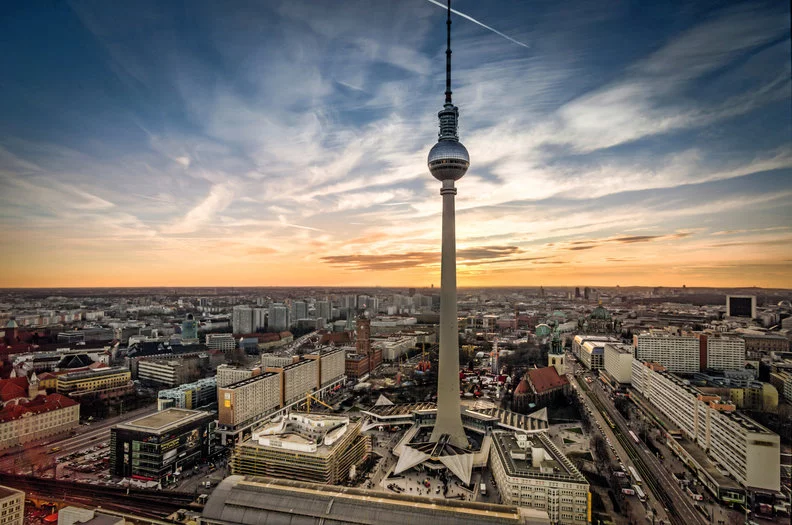
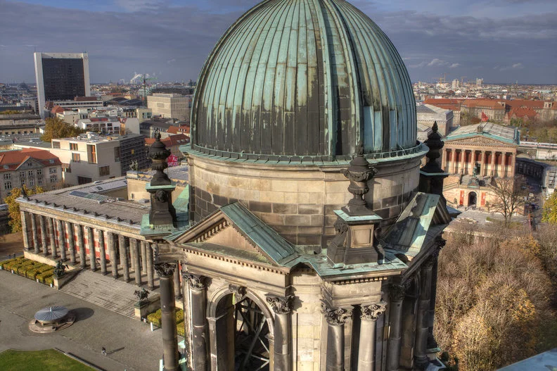
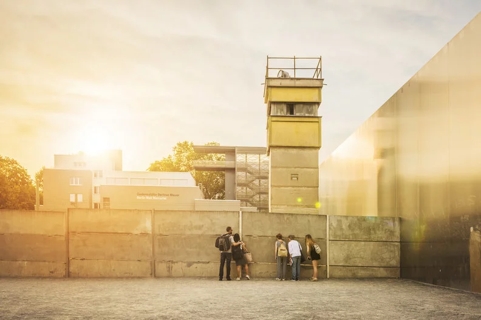
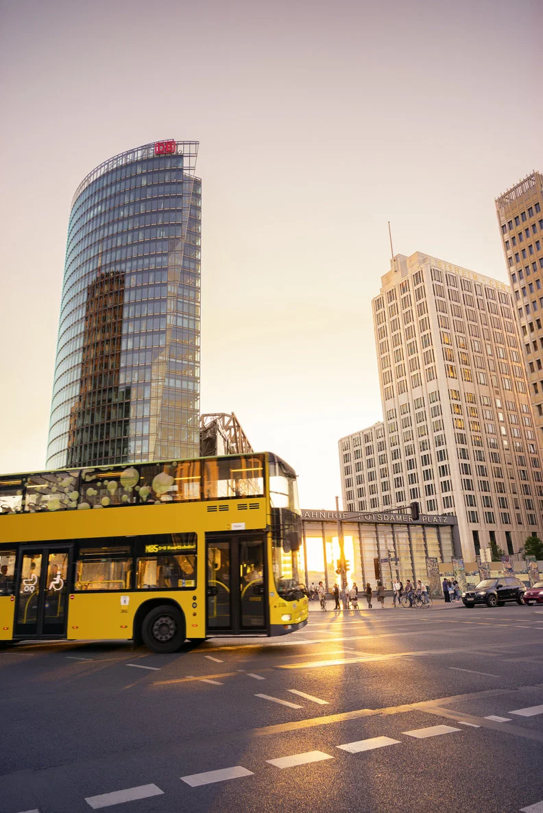
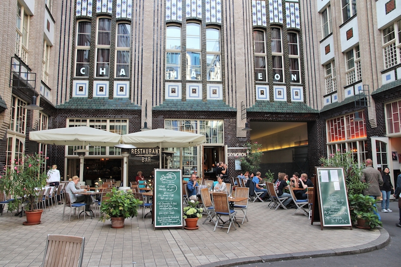
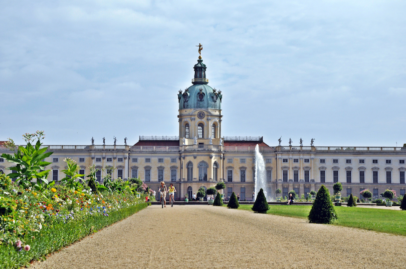
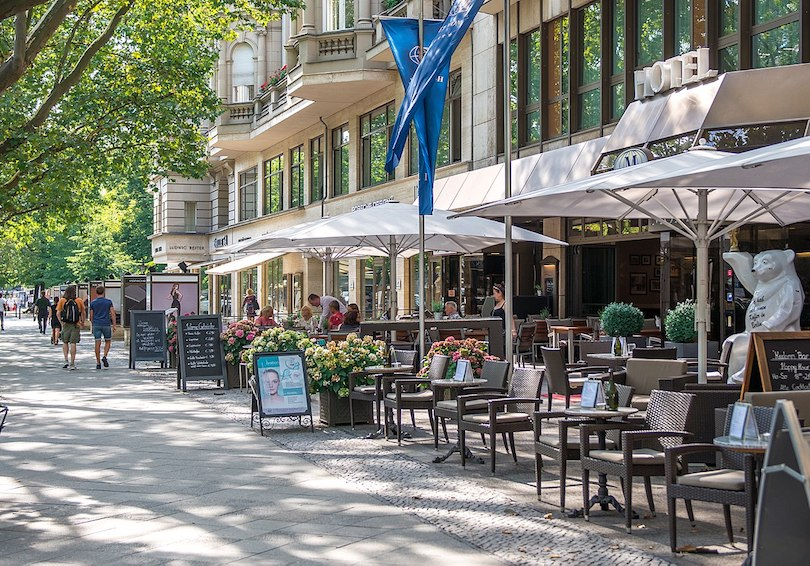
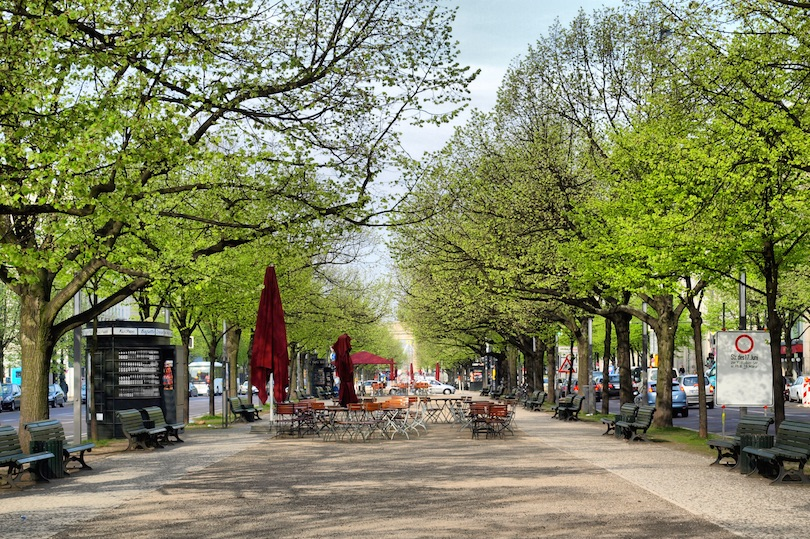
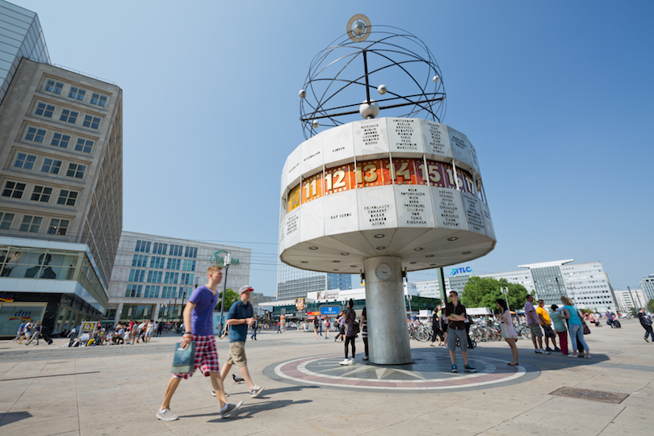

Without a doubt, the Brandenburg Gate is Berlin's signature attraction. Built in 1791, it was just one of many old city gates around the city of Berlin which, at that time, was still a manageable size. The decorative Pariser Platz was laid at the foot of the gate and is now home to many of the city's important buildings, for example, the Hotel Adlon with its wealth of history and the Akademie der Künste (Academy of the Arts).

The Berlin Television Tower, which is known to locals as the Fernsehturm, and is instantly recognisable from the distance, stand outs of the skyline at 368m, making it the tallest building in Berlin. Built in the 1960s, visitors to the tower can enjoy a unique 360° panorama of the city. The Berlin WelcomeCard enables free travelling with all public transport services to the Berlin visitors. With over 200 partners and outstanding discounts the Berlin WelcomeCard offers you a complete „carefree“ package.

Berlin's Museum Island is one of the UNESCO world heritage sites and home to the city's most important exhibition centres: the Altes Museum (Old Museum), the Neues Museum (New Museum) the Bode Museum, the Pergamon Museum and the Alte Nationalgalerie (Old National Gallery). The collections in these buildings encompass over 6,000 years of art and cultural history. Just opposite Berlin's Museum Island, the magnificent monumental Berlin Cathedral, an important landmark of Berlin whose history dates back to the 15th century, is also located on the Museum Island.

The Gedenkstätte Berliner Mauer (Berlin Wall Memorial) is located between the districts of Wedding and Mitte on Bernauer Straße, consisting of the Memorial to the Victims of the Wall, a Documentation Centre and the Chapel of Reconciliation. The surviving section of the wall and watchtower enable visitors to get a real feel for the reality of the border facilities.

Once the bustling heart of the city before the Second World War, then a no man's land from 1945 until the fall of the wall, the history of Potsdamer Platz has been eventful to say the least. It changed completely after the fall of the wall in 1989 and is now dominated by the presence of the Sony Center, skyscrapers and endless shops. What's more, Potsdamer Platz is the main place to be for stars and celebrities, and not only during film festivals.

Located at the far end of Oranienburger Strasse in the Scheunenviertel, the Hackesche Höfe is a complex that includes eight interconnected courtyards. It was designed and built by the architect Kurt Berndt, and the Art Nouveau façade was the work of August Endell.As with many Berlin courtyard buildings, the complex was used for a mixture of offices, shops and flats. The buildings were only partially damaged during the WW2, but were mostly neglected while Germany was partitioned. Only after reunification, starting in 1993, was the complex extensively restored and it now looks better than it ever has. Inside the Höfe you’ll find a wide variety of cafes, restaurants and shops that attract tons of locals and visitors each day. As you travel from one courtyard to the next to see more vendors, you’ll understand the unique nature of this complex.

If you like touring palaces, then don’t miss the Charlottenburg Palace. This is the largest palace in Germany, and it is found in Berlin’s City West district. Charlottenburg Palace was constructed at the end of the 17th century, and the entire community of Charlottenburg grew around it.Built in the Baroque style, and boasting beautiful gardens and outdoor sculptures, the palace is now open to the public. You can tour restored rooms and see the extravagant, rococo style in the apartments of Frederick the Great, and you can also see collections of porcelain, crown jewels and royal silver.

Kurfürstendamm, known to locals at Ku’damm, was built as a German answer to the Champs-Elysee in Paris. The wide road was lined with trees and ornate buildings were built along both sides. It is the heart of former West Berlin, and is still the city’s most popular shopping boulevard.The side streets of Tauentzienstraße and Fasanenstraße are lined with malls and high-end flagship stores. If you’re in the area, be sure to check out KaDeWe, or the Kaufhaus des Westens. This is the largest department store in all of Europe, and it boasts virtually anything you might want to purchase from expensive shoes to fresh produce.

This beautiful boulevard lined with linden trees is one of the main east-west routes through Berlin. The trees were first planted in the mid 1600s and are cared for and cultivated by the city. Over the centuries the boulevard has been extended and now stretches from Museum Island to the Brandenburg Gate. Greatly damaged during the war, Unter den Linden has been renovated and is currently lined with many architectural sites and other tourist attractions in Berlin including the German Historical Museum, the Staatsoper, Altes Palais and the Palace Bridge.

If you visit Berlin, you’ll almost certainly spend some time in Alexanderplatz. This large public square is right in the heart of the Mitte district, and it is the major hub for transport in Berlin. Today, it is also home to some of the most popular historic attractions in the city.From the Alexanderplatz, you can see the Berlin TV Tower dominating the skyline, the World Clock and the Neptune Fountain. There are also plenty of local shops, restaurants and even a casino. The plaza is also home to the Galeria Kaufhof, one of the busiest shopping spots in the area.